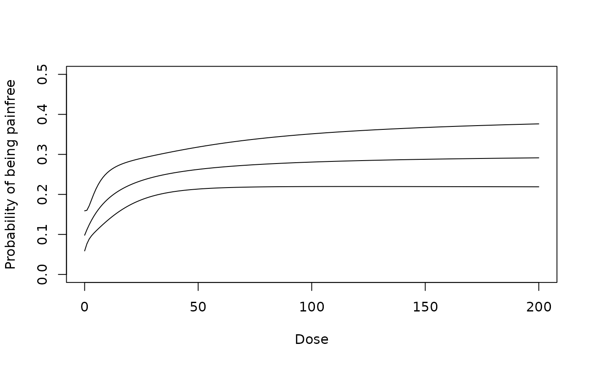
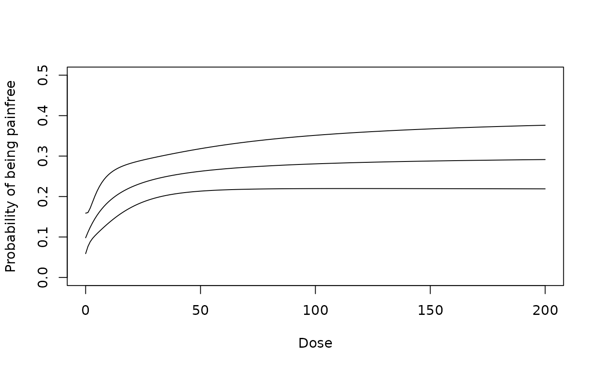

Fits a dose-response model. Built-in dose-response models are "linlog", "linear", "quadratic", "emax", "exponential",
"sigEmax", "betaMod" and "logistic" (see drmodels).
Usage
fitMod(
dose,
resp,
data = NULL,
model = NULL,
S = NULL,
type = c("normal", "general"),
addCovars = ~1,
placAdj = FALSE,
bnds,
df = NULL,
start = NULL,
na.action = na.fail,
control = NULL,
addArgs = NULL
)
# S3 method for class 'DRMod'
coef(object, sep = FALSE, ...)
# S3 method for class 'DRMod'
vcov(object, ...)
# S3 method for class 'DRMod'
predict(
object,
predType = c("full-model", "ls-means", "effect-curve"),
newdata = NULL,
doseSeq = NULL,
se.fit = FALSE,
...
)
# S3 method for class 'DRMod'
plot(
x,
CI = FALSE,
level = 0.95,
plotData = c("means", "meansCI", "raw", "none"),
plotGrid = TRUE,
colMn = 1,
colFit = 1,
...
)
# S3 method for class 'DRMod'
logLik(object, ...)
# S3 method for class 'DRMod'
AIC(object, ..., k = 2)
# S3 method for class 'DRMod'
gAIC(object, ..., k = 2)Arguments
- dose, resp
Either vectors of equal length specifying dose and response values, or names of variables in the data frame specified in data.
- data
Data frame containing the variables referenced in dose and resp if data is not specified it is assumed that dose and resp are variables referenced from data (and no vectors)
- model
The dose-response model to be used for fitting the data. Built-in models are "linlog", "linear", "quadratic", "emax", "exponential", "sigEmax", "betaMod" and "logistic" (see drmodels).
- S
The inverse weighting matrix used in case, when type = "general", see Description. For later inference statements (vcov or predict methods) it is assumed this is the estimated covariance of the estimates in the first stage fit.
- type
Determines whether inference is based on an ANCOVA model under a homoscedastic normality assumption (when type = "normal"), or estimates at the doses and their covariance matrix and degrees of freedom are specified directly in resp, S and df. See also the Description above and Pinheiro et al. (2014).
- addCovars
Formula specifying additional additive linear covariates (only for type = "normal")
- placAdj
Logical, if true, it is assumed that placebo-adjusted estimates are specified in resp (only possible for type = "general").
- bnds
Bounds for non-linear parameters. If missing the the default bounds from
defBndsis used.When the dose-response model has only one non-linear parameter (for example Emax or exponential model), bnds needs to be a vector containing upper and lower bound. For models with two non-linear parameters bnds needs to be a matrix containing the bounds in the rows, see the Description section of
defBndsfor details on the formatting of the bounds for the individual models.- df
Degrees of freedom to use in case of type = "general". If this argument is missing df = Inf is used. For type = "normal" this argument is ignored as the exact degrees of freedom can be deduced from the model.
- start
Vector of starting values for the nonlinear parameters (ignored for linear models). When equal to NULL, a grid optimization is performed and the best value is used as starting value for the local optimizer.
- na.action
A function which indicates what should happen when the data contain NAs.
- control
A list with entries: "nlminbcontrol", "optimizetol" and "gridSize".
The entry nlminbcontrol needs to be a list and it is passed directly to control argument in the nlminb function, that is used internally for models with 2 nonlinear parameters.
The entry optimizetol is passed directly to the tol argument of the optimize function, which is used for models with 1 nonlinear parameters.
The entry gridSize needs to be a list with entries dim1 and dim2 giving the size of the grid for the gridsearch in 1d or 2d models.
- addArgs
List containing two entries named "scal" and "off" for the "betaMod" and "linlog" model. When addArgs is NULL the following defaults is used list(scal = 1.2*max(doses), off = 0.01*max(doses)).
- object, x
DRMod object
- sep
Logical determining whether all coefficients should be returned in one numeric or separated in a list.
- ...
Additional arguments for plotting for the plot method. For all other cases additional arguments are ignored.
- predType, newdata, doseSeq, se.fit
predType determines whether predictions are returned for the full model (including potential covariates), the ls-means (SAS type) or the effect curve (difference to placebo).
newdata gives the covariates to use in producing the predictions (for predType = "full-model"), if missing the covariates used for fitting are used.
doseSeq dose-sequence on where to produce predictions (for predType = "effect-curve" and predType = "ls-means"). If missing the doses used for fitting are used.
se.fit: logical determining, whether the standard error should be calculated.
- CI, level, plotData, plotGrid, colMn, colFit
Arguments for plot method: CI determines whether confidence intervals should be plotted. level determines the level of the confidence intervals. plotData determines how the data are plotted: Either as means or as means with CI, raw data or none. In case of type = "normal" and covariates the ls-means are displayed, when type = "general" the option "raw" is not available. colMn and colFit determine the colors of fitted model and the raw means.
- k
Penalty to use for model-selection criterion (AIC uses 2, BIC uses log(n)).
Value
An object of class DRMod. Essentially a list containing information about the fitted model coefficients, the residual sum of squares (or generalized residual sum of squares),
Details
When type = "normal" ordinary least squares is used and additional additive covariates can be specified in addCovars. The underlying assumption is hence normally distributed data and homoscedastic variance.
For type = "general" a generalized least squares criterion is used $$$$$$ (f(dose,\theta)-resp)'S^{-1}(f(dose,\theta)-resp)$$ and an inverse weighting matrix is specified in S, type = "general" is primarily of interest, when fitting a model to AN(C)OVA type estimates obtained in a first stage fit, then resp contains the estimates and S is the estimated covariance matrix for the estimates in resp. Statistical inference (e.g. confidence intervals) rely on asymptotic normality of the first stage estimates, which makes this method of interest only for sufficiently large sample size for the first stage fit. A modified model-selection criterion can be applied to these model fits (see also Pinheiro et al. 2014 for details).
For details on the implemented numerical optimizer see the Details section below.
Details on numerical optimizer for model-fitting:
For linear models fitting is done using numerical linear algebra
based on the QR decomposition. For nonlinear models numerical optimization is performed only in the nonlinear
parameters in the model and optimizing over the linear parameters in each iteration (similar as the Golub-Pereyra
implemented in nls). For models with 1 nonlinear parameter the optimize function is used
for 2 nonlinear parameters the nlminb function is used. The starting value is generated using a
grid-search (with the grid size specified via control$gridSize), or can directly be handed over via
start.
For details on the asymptotic approximation used for type = "normal", see Seber and Wild (2003, chapter 5). For details on the asymptotic approximation used for type = "general", and the gAIC, see Pinheiro et al. (2014).
References
Pinheiro, J. C., Bornkamp, B., Glimm, E. and Bretz, F. (2014) Model-based dose finding under model uncertainty using general parametric models, Statistics in Medicine, 33, 1646–1661
Seber, G.A.F. and Wild, C.J. (2003). Nonlinear Regression, Wiley.
Examples
## Fit the emax model to the IBScovars data set
data(IBScovars)
fitemax <- fitMod(dose, resp, data=IBScovars, model="emax",
bnds = c(0.01, 4))
## methods for DRMod objects
summary(fitemax)
#> Dose Response Model
#>
#> Model: emax
#> Fit-type: normal
#>
#> Residuals:
#> Min 1Q Median 3Q Max
#> -2.8748 -0.4734 -0.0296 0.4940 2.1631
#>
#> Coefficients with approx. stand. error:
#> Estimate Std. Error
#> e0 0.217 0.0903
#> eMax 0.377 0.1515
#> ed50 0.363 0.7679
#>
#> Residual standard error: 0.761
#> Degrees of freedom: 366
## extracting coefficients
coef(fitemax)
#> e0 eMax ed50
#> 0.2171129 0.3773367 0.3628365
## (asymptotic) covariance matrix of estimates
vcov(fitemax)
#> e0 eMax ed50
#> e0 0.008151233 -0.007833365 0.01169729
#> eMax -0.007833365 0.022948049 0.07412872
#> ed50 0.011697291 0.074128715 0.58972101
## predicting
newdat <- data.frame(dose = c(0,0.5,1), gender=factor(1))
predict(fitemax, newdata=newdat, predType = "full-model", se.fit = TRUE)
#> $fit
#> [1] 0.2171129 0.4357735 0.4939889
#>
#> $se.fit
#> [1] 0.09028418 0.13019577 0.08060712
#>
## plotting
plot(fitemax, plotData = "meansCI", CI=TRUE)
 ## now include (additive) covariate gender
fitemax2 <- fitMod(dose, resp, data=IBScovars, model="emax",
addCovars = ~gender, bnds = c(0.01, 4))
vcov(fitemax2)
#> e0 eMax ed50 gender2
#> e0 0.011767275 -0.0080170385 0.0118789742 -0.0050993260
#> eMax -0.008017039 0.0230221644 0.0744025962 0.0002308542
#> ed50 0.011878974 0.0744025962 0.5924163063 -0.0001905096
#> gender2 -0.005099326 0.0002308542 -0.0001905096 0.0072354137
plot(fitemax2)
## fitted log-likelihood
logLik(fitemax2)
#> 'log Lik.' -421.1925 (df=5)
## extracting AIC (or BIC)
AIC(fitemax2)
#> [1] 852.3851
## Illustrating the "general" approach for a binary regression
## produce first stage fit (using dose as factor)
data(migraine)
PFrate <- migraine$painfree/migraine$ntrt
doseVec <- migraine$dose
doseVecFac <- as.factor(migraine$dose)
## fit logistic regression with dose as factor
fitBin <- glm(PFrate~doseVecFac-1, family = binomial,
weights = migraine$ntrt)
drEst <- coef(fitBin)
vCov <- vcov(fitBin)
## now fit an Emax model (on logit scale)
gfit <- fitMod(doseVec, drEst, S=vCov, model = "emax", bnds = c(0,100),
type = "general")
## model fit on logit scale
plot(gfit, plotData = "meansCI", CI = TRUE)
## model on probability scale
logitPred <- predict(gfit, predType ="ls-means", doseSeq = 0:200,
se.fit=TRUE)
plot(0:200, 1/(1+exp(-logitPred$fit)), type = "l", ylim = c(0, 0.5),
ylab = "Probability of being painfree", xlab = "Dose")
LB <- logitPred$fit-qnorm(0.975)*logitPred$se.fit
UB <- logitPred$fit+qnorm(0.975)*logitPred$se.fit
lines(0:200, 1/(1+exp(-LB)))
lines(0:200, 1/(1+exp(-UB)))

## now illustrate "general" approach for placebo-adjusted data (on
## IBScovars) note that the estimates are identical to fitemax2 above)
anovaMod <- lm(resp~factor(dose)+gender, data=IBScovars)
drFit <- coef(anovaMod)[2:5] # placebo adjusted estimates at doses
vCov <- vcov(anovaMod)[2:5,2:5]
dose <- sort(unique(IBScovars$dose))[-1]
## now fit an emax model to these estimates
gfit2 <- fitMod(dose, drFit, S=vCov, model = "emax", type = "general",
placAdj = TRUE, bnds = c(0.01, 2))
## some outputs
summary(gfit2)
#> Dose Response Model
#>
#> Model: emax
#> Fit-type: general
#>
#> Coefficients with approx. stand. error:
#> Estimate Std. Error
#> eMax 0.377 0.152
#> ed50 0.363 0.772
#>
#> Fitted to:
#> 1 2 3 4
#> 0.285 0.297 0.350 0.348
#>
#> with Covariance Matrix:
#> 1 2 3 4
#> 1 0.01570 0.00822 0.00822 0.00822
#> 2 0.00822 0.01600 0.00825 0.00821
#> 3 0.00822 0.00825 0.01640 0.00820
#> 4 0.00822 0.00821 0.00820 0.01620
coef(gfit2)
#> eMax ed50
#> 0.3771103 0.3630332
vcov(gfit2)
#> eMax ed50
#> eMax 0.02314275 0.0747923
#> ed50 0.07479230 0.5955193
predict(gfit2, se.fit = TRUE, doseSeq = c(1,2,3,4), predType = "effect-curve")
#> $fit
#> [1] 0.2766699 0.3191748 0.3364020 0.3457323
#>
#> $se.fit
#> [1] 0.1213133 0.1016972 0.1050097 0.1110139
#>
plot(gfit2, CI=TRUE, plotData = "meansCI")
gAIC(gfit2)
#> [1] 4.098152
## now include (additive) covariate gender
fitemax2 <- fitMod(dose, resp, data=IBScovars, model="emax",
addCovars = ~gender, bnds = c(0.01, 4))
vcov(fitemax2)
#> e0 eMax ed50 gender2
#> e0 0.011767275 -0.0080170385 0.0118789742 -0.0050993260
#> eMax -0.008017039 0.0230221644 0.0744025962 0.0002308542
#> ed50 0.011878974 0.0744025962 0.5924163063 -0.0001905096
#> gender2 -0.005099326 0.0002308542 -0.0001905096 0.0072354137
plot(fitemax2)
## fitted log-likelihood
logLik(fitemax2)
#> 'log Lik.' -421.1925 (df=5)
## extracting AIC (or BIC)
AIC(fitemax2)
#> [1] 852.3851
## Illustrating the "general" approach for a binary regression
## produce first stage fit (using dose as factor)
data(migraine)
PFrate <- migraine$painfree/migraine$ntrt
doseVec <- migraine$dose
doseVecFac <- as.factor(migraine$dose)
## fit logistic regression with dose as factor
fitBin <- glm(PFrate~doseVecFac-1, family = binomial,
weights = migraine$ntrt)
drEst <- coef(fitBin)
vCov <- vcov(fitBin)
## now fit an Emax model (on logit scale)
gfit <- fitMod(doseVec, drEst, S=vCov, model = "emax", bnds = c(0,100),
type = "general")
## model fit on logit scale
plot(gfit, plotData = "meansCI", CI = TRUE)
## model on probability scale
logitPred <- predict(gfit, predType ="ls-means", doseSeq = 0:200,
se.fit=TRUE)
plot(0:200, 1/(1+exp(-logitPred$fit)), type = "l", ylim = c(0, 0.5),
ylab = "Probability of being painfree", xlab = "Dose")
LB <- logitPred$fit-qnorm(0.975)*logitPred$se.fit
UB <- logitPred$fit+qnorm(0.975)*logitPred$se.fit
lines(0:200, 1/(1+exp(-LB)))
lines(0:200, 1/(1+exp(-UB)))

## now illustrate "general" approach for placebo-adjusted data (on
## IBScovars) note that the estimates are identical to fitemax2 above)
anovaMod <- lm(resp~factor(dose)+gender, data=IBScovars)
drFit <- coef(anovaMod)[2:5] # placebo adjusted estimates at doses
vCov <- vcov(anovaMod)[2:5,2:5]
dose <- sort(unique(IBScovars$dose))[-1]
## now fit an emax model to these estimates
gfit2 <- fitMod(dose, drFit, S=vCov, model = "emax", type = "general",
placAdj = TRUE, bnds = c(0.01, 2))
## some outputs
summary(gfit2)
#> Dose Response Model
#>
#> Model: emax
#> Fit-type: general
#>
#> Coefficients with approx. stand. error:
#> Estimate Std. Error
#> eMax 0.377 0.152
#> ed50 0.363 0.772
#>
#> Fitted to:
#> 1 2 3 4
#> 0.285 0.297 0.350 0.348
#>
#> with Covariance Matrix:
#> 1 2 3 4
#> 1 0.01570 0.00822 0.00822 0.00822
#> 2 0.00822 0.01600 0.00825 0.00821
#> 3 0.00822 0.00825 0.01640 0.00820
#> 4 0.00822 0.00821 0.00820 0.01620
coef(gfit2)
#> eMax ed50
#> 0.3771103 0.3630332
vcov(gfit2)
#> eMax ed50
#> eMax 0.02314275 0.0747923
#> ed50 0.07479230 0.5955193
predict(gfit2, se.fit = TRUE, doseSeq = c(1,2,3,4), predType = "effect-curve")
#> $fit
#> [1] 0.2766699 0.3191748 0.3364020 0.3457323
#>
#> $se.fit
#> [1] 0.1213133 0.1016972 0.1050097 0.1110139
#>
plot(gfit2, CI=TRUE, plotData = "meansCI")
gAIC(gfit2)
#> [1] 4.098152